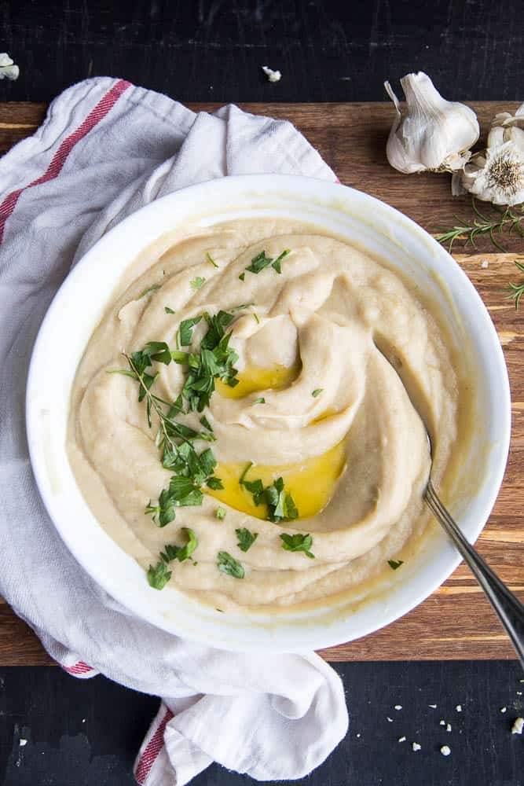

Cauliflower Puree

- One head, Cauliflower
- 8 Tablespoons, grass fed butter
- One head, garlic
- Fresh herbs, Thyme and Rosemary
- Extra Virgin Olive Oil
- Kosher salt and pepper, to taste
- Preheat oven to 375 degrees Fahrenheit. Meanwhile, cut the head of garlic in half. Tear of a sheet of aluminum foil and lay both halves of the garlic in the middle of the sheet. Drizzle with olive oil, salt and pepper, and lay fresh herbs on top. fold the ends of the foil over, creating a pouch. Drop in a teaspoon of less of water, so that the garlic will also steam. Seal the foil and place the pouch into the oven for 45 minutes. Remove the pouch and let cool.
- Cut up the cauliflower into small pieces and place into a pot. Cover the cauliflower with cold, salted water, and bring to the boil, covering slightly. Let boil for 15 to 20 minutes, or until cauliflower is fork tender.
- Drain the water from the cauliflower.
- In a food processor, dump the cauliflower, butter, and all of the roasted garlic. Then Puree until smooth.
- Season to taste, and enjoy. You're welcome.